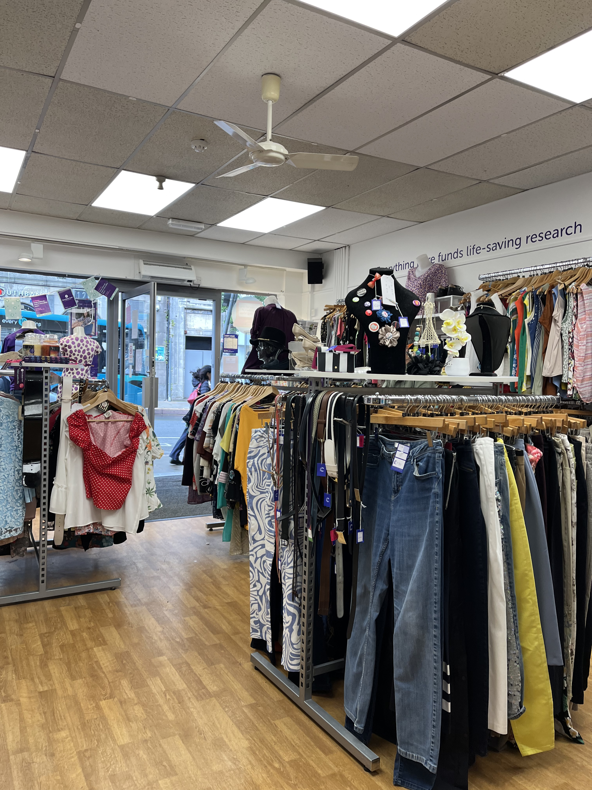
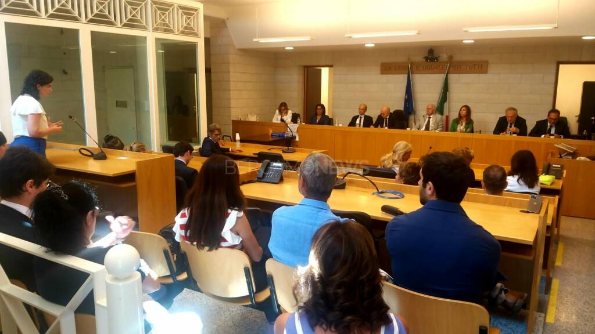

PERCORSI PCTO
Quattro esperienze fondamentali per plasmare il mio futuro. Competenze, pratica e tecnologia — tutto in un unico percorso.


Quattro esperienze fondamentali per plasmare il mio futuro. Competenze, pratica e tecnologia — tutto in un unico percorso.
[Qui inseriremo il tuo testo di presentazione stringato. Sostituirai questo blocco con la tua sintesi del percorso prima di scendere nel dettaglio delle singole esperienze.]